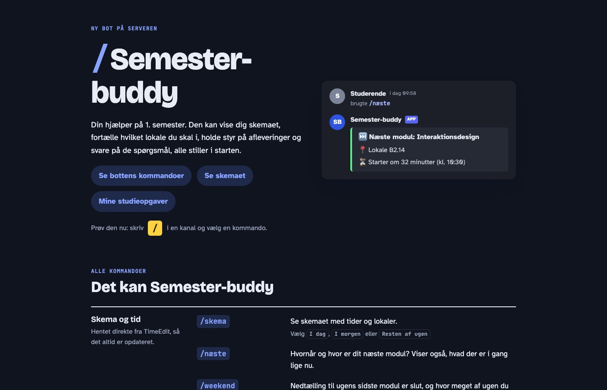

3. Semester
Semester-buddy
En Discord-bot til 1. semester, som samler skema, afleveringer og svar på typiske spørgsmål ét sted.
Se guiden til botten
Opgaven
I Studiemakker på tværs skulle jeg lave en prototype på en Discord-bot og præsentere den individuelt. Jeg er tutor for 1. semester, så jeg valgte at lave den til dem.
Det vigtigste krav var, at botten ikke må dele noget fra serveren med eksterne parter. Derfor kan den ikke læse beskeder, den har ingen database, og afleveringer ligger som begivenheder i Discord.
Det kan botten
- /næste viser, hvor og hvornår næste modul er.
- /skema viser skemaet.
- /faq svarer på de mest stillede spørgsmål.
- /begreb forklarer fagbegreber.
- /deadline viser kommende afleveringer.
- /fokus starter en Pomodoro-session.
Botten sender også selv dagens skema kl. 7 og en påmindelse om næste dag kl. 20. Hver halve time tjekker den, om skemaet er ændret.
Sådan virker den
Jeg byggede den i JavaScript med biblioteket discord.js og med AI som hjælp. Hver kommando ligger i sin egen fil, så det er nemt at tilføje nye. Skemaet hentes som en .ics-fil fra TimeEdit, og koden laver den om til en liste af moduler. Svarene til FAQ og fagbegreber ligger i JSON-filer. Jeg satte botten til at køre på en server i EU, og den kom ud til holdet i en ny kanal med en besked og et link til guiden.
Test
Botten har været tilgængelig for teamet siden 26. oktober, og jeg præsenterede den i Frontend Voice den 9. november. Jeg har ikke lavet en samlet test med teamet endnu. Næste skridt er at teste den med dem på vores møde den 10. november.
Næste gang vil jeg inddrage brugerne tidligere, så deres behov er med fra starten.
Det lærte jeg
- At tænke privatliv ind fra starten.
- At hente rigtige data fra et API.
- At få en bot til at køre på en server.
- Det er fedt at lave noget, rigtige studerende kan bruge.